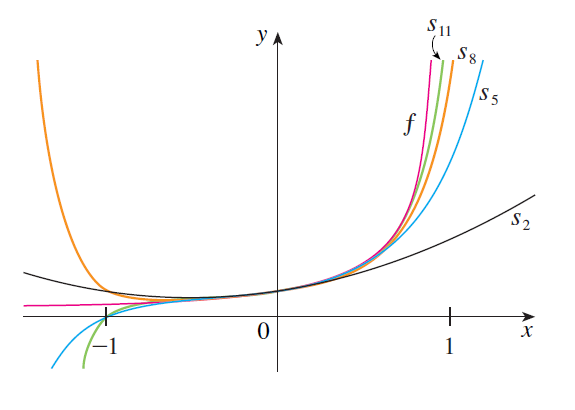

PARTE 4 · AULAS 72–73
Funções como séries de potências
Uma série de potências permite representar determinadas funções por uma soma infinita de termos polinomiais. Partindo da série geométrica, podemos obter novas representações por manipulações algébricas, substituições, derivação e integração termo a termo. Essas representações também permitem aproximar funções e calcular integrais que podem ser difíceis de tratar diretamente.
1. A ideia de representar uma função por uma série
Uma função pode, em determinadas condições, ser escrita como uma série de potências:
Isso significa que, para os valores de \(x\) pertencentes ao intervalo de convergência,
Portanto, uma função que inicialmente pode ser racional, logarítmica ou trigonométrica inversa passa a ser representada por uma soma de potências de \(x-a\).
2. A série geométrica como ponto de partida
A principal série utilizada para construir novas representações nas aulas é a série geométrica.
Desenvolvendo a soma,
A igualdade deve ser entendida juntamente com sua condição de convergência. A representação por série é válida somente para
3. Somas parciais e aproximação da função
A identidade
pode ser interpretada em termos das somas parciais
Para cada \(x\) com \(|x|<1\),
Assim, os polinômios
fornecem aproximações sucessivas da função

4. Estratégia para obter novas séries
Muitas funções podem ser relacionadas à expressão
A estratégia consiste em reescrever a função desejada na forma
para alguma expressão \(u=u(x)\). Então utilizamos
- Reescreva a função de modo que apareça uma expressão do tipo \(1/(1-u)\).
- Identifique a expressão \(u\).
- Substitua \(u\) na série geométrica.
- Simplifique o termo geral.
- Resolva a condição \[ |u|<1 \] para determinar onde a representação é válida.
5. Exemplo: representação de \(\frac{1}{1+x^2}\)
Queremos representar
como uma série de potências.
Escrevemos
Na série geométrica, fazemos
Logo,
Portanto,
ou, explicitando os primeiros termos,
6. Intervalo de convergência do exemplo anterior
Como utilizamos a série geométrica com razão
precisamos impor
Como
temos
Equivalentemente,
Portanto,
7. Exemplo: representação de \(\frac{1}{x+2}\)
Para utilizar a série geométrica, primeiro fatoramos \(2\) no denominador:
Assim,
Aplicando a série geométrica com
obtemos
Portanto,
A condição de convergência é
isto é,
Logo,
8. Multiplicando uma representação conhecida
Uma vez conhecida uma representação em série de potências, podemos utilizá-la para obter outras representações.
Por exemplo, como
podemos multiplicar ambos os lados por \(x^3\):
Assim,
e, desenvolvendo,
O intervalo de convergência continua sendo
9. Derivação e integração termo a termo
As séries de potências possuem uma propriedade particularmente importante: no interior de seu intervalo de convergência, elas podem ser derivadas e integradas termo a termo.
Considere
com raio de convergência
Então \(f\) é diferenciável para
10. Derivação termo a termo
Se
então podemos derivar cada termo:
Em notação de somatório,
De maneira compacta,
11. Integração termo a termo
Analogamente, podemos integrar cada termo da série:
Em notação de somatório,
Ou, de forma compacta,
12. O que acontece com o raio de convergência?
Um resultado fundamental é que a série original, sua derivada termo a termo e sua integral termo a termo possuem o mesmo raio de convergência.
Se
possui raio \(R\), então
e
também possuem raio
13. Exemplo: obtendo \(\frac{1}{(1-x)^2}\)
Começamos novamente com
Derivando ambos os lados,
Logo,
Em notação de somatório,
Fazendo uma mudança de índice, também podemos escrever
O raio continua sendo \(1\), pois a derivação preserva o raio de convergência.
14. Exemplo: série para \(\ln(1+x)\)
Sabemos que
Pela série geométrica,
Integramos termo a termo:
Portanto,
15. Determinação da constante de integração
Para determinar \(C\), fazemos
Como
temos
Assim,
16. Série para \(\ln(1-x)\)
Uma representação relacionada é
O raio de convergência continua sendo
17. Exemplo: série para \(\arctan x\)
Considere
Sua derivada é
Já obtivemos anteriormente
Portanto,
Integrando termo a termo,
Como
segue que
Logo,
18. Por que integrar uma série de potências?
Uma vantagem importante dessa técnica é transformar uma função cuja integral pode não ser simples em uma soma de potências, cujos termos podem ser integrados individualmente.
A estratégia geral é
e, então,
Dessa maneira, problemas de integração podem ser convertidos em problemas envolvendo séries.
19. Exemplo: integrando \(\frac{1}{1+x^7}\)
Queremos escrever
como uma série de potências.
Primeiro escrevemos o integrando como
Utilizando a série geométrica,
Portanto,
Explicitando os primeiros termos,
A condição da série geométrica é
isto é,
20. Integração da série
Integramos termo a termo:
Assim,
Em termos dos primeiros elementos,
21. Aproximando uma integral definida
Nas aulas, a série anterior é utilizada para aproximar
Pelo Teorema Fundamental do Cálculo,
Portanto,
22. Controle do erro da aproximação
A série numérica obtida no exemplo anterior é alternada. Portanto, podemos utilizar o Teorema da Estimativa de Séries Alternadas para controlar o erro.
Se interrompermos a soma após o termo correspondente a \(n=3\), o módulo do erro é menor que o módulo do próximo termo:
Numericamente,
Esse erro já é muito menor que a precisão solicitada de
Assim,
23. Como escolher a estratégia?
Ao receber uma função e ser solicitado a representá-la como série de potências, é útil seguir uma sequência de decisões.
- Verifique se a função pode ser reescrita diretamente a partir de \[ \frac{1}{1-x}. \]
- Procure uma substituição que transforme o denominador em \(1-u\).
- Se já houver uma série conhecida para uma função relacionada, considere multiplicá-la por uma potência de \(x\).
- Se a função desejada for derivada de uma função cuja série é conhecida, derive termo a termo.
- Se a função desejada for uma primitiva de uma função cuja série é conhecida, integre termo a termo.
- Determine a constante de integração quando necessário.
- Registre o raio de convergência.
- Quando for necessário determinar o intervalo completo, analise os extremos separadamente.
24. Representações importantes obtidas nesta seção
Série geométrica
Substituição \(x\mapsto -x^2\)
Derivação
Integração
Integração da série de \(1/(1+x^2)\)
25. Cuidados importantes
- Não utilize \[ \frac{1}{1-u} = \sum_{n=0}^{\infty}u^n \] sem verificar a condição \[ |u|<1. \]
- Depois de uma substituição, a condição de convergência deve ser escrita novamente em termos de \(x\).
- Não confunda a função com uma soma parcial. Uma soma parcial possui um número finito de termos e apenas aproxima a soma da série.
- A derivação e a integração termo a termo são realizadas no interior do intervalo de convergência.
- Derivar ou integrar uma série não altera seu raio de convergência.
- Apesar de o raio permanecer o mesmo, o comportamento nos extremos pode mudar.
- Ao integrar uma série indefinidamente, não esqueça a constante de integração \(C\).
- Quando necessário, determine \(C\) utilizando um valor conhecido da função, como foi feito em \[ \ln(1+0)=0 \] e \[ \arctan(0)=0. \]
26. Das séries de potências às séries de Taylor
Nesta seção, partimos de uma série conhecida — principalmente a série geométrica — e utilizamos operações algébricas, derivação e integração para construir representações de outras funções.
Surge então uma questão natural:
Essa questão conduz ao estudo das séries de Taylor e de Maclaurin.
Compare uma função com suas somas parciais. Por exemplo, represente \[ f(x)=\frac{1}{1-x} \] juntamente com \[ s_N(x)=1+x+x^2+\cdots+x^N \] para diferentes valores de \(N\), observando a aproximação no intervalo de convergência.
Conteúdo correspondente às Aulas 72–73: representações de funções como séries de potências, manipulação da série geométrica, derivação e integração termo a termo e aplicações.